For binary scoring classifiers a threshold (or cutoff) value controls how predicted posterior probabilities are converted into class labels. ROC curves and other performance plots serve to visualize and analyse the relationship between one or two performance measures and the threshold.
This page is mainly devoted to receiver operating characteristic (ROC) curves that plot the true positive rate (sensitivity) on the vertical axis against the false positive rate (1 - specificity, fall-out) on the horizontal axis for all possible threshold values. Creating other performance plots like lift charts or precision/recall graphs works analogously and is shown briefly.
In addition to performance visualization ROC curves are helpful in
- determining an optimal decision threshold for given class prior probabilities and misclassification costs (for alternatives see also the pages about cost-sensitive classification and imbalanced classification problems in this tutorial),
- identifying regions where one classifier outperforms another and building suitable multi-classifier systems,
- obtaining calibrated estimates of the posterior probabilities.
For more information see the tutorials and introductory papers by Fawcett (2004), Fawcett (2006) as well as Flach (ICML 2004).
In many applications as, e.g., diagnostic tests or spam detection, there is uncertainty about the class priors or the misclassification costs at the time of prediction, for example because it’s hard to quantify the costs or because costs and class priors vary over time. Under these circumstances the classifier is expected to work well for a whole range of decision thresholds and the area under the ROC curve (AUC) provides a scalar performance measure for comparing and selecting classifiers. mlr provides the AUC for binary classification (auc) and also several generalizations of the AUC to the multi-class case (e.g., multiclass.au1p, multiclass.au1u based on Ferri et al. (2009)).
mlr offers three ways to plot ROC and other performance curves.
- Function
plotROCCurves()can, based on the output ofgenerateThreshVsPerfData(), plot performance curves for any pair of performance measures available inmlr. -
mlroffers an interface to packageROCRthrough functionasROCRPrediction(). -
mlr’s functionplotViperCharts()provides an interface to ViperCharts.
With mlr version 2.8 functions generateROCRCurvesData, plotROCRCurves, and plotROCRCurvesGGVIS were deprecated.
Below are some examples that demonstrate the three possible ways. Note that you can only use learners that are capable of predicting probabilities. Have a look at the learner table in the Appendix or run listLearners("classif", properties = c("twoclass", "prob")) to get a list of all learners that support this.
Performance plots with plotROCCurves
As you might recall generateThreshVsPerfData() calculates one or several performance measures for a sequence of decision thresholds from 0 to 1. It provides S3 methods for objects of class Prediction(), ResampleResult() and BenchmarkResult() (resulting from predict (predict.WrappedModel()), resample() or benchmark()). plotROCCurves() plots the result of generateThreshVsPerfData() using ggplot2.
Example 1: Single predictions
We consider the Sonar (mlbench::Sonar()) data set from package mlbench, which poses a binary classification problem (sonar.task()) and apply linear discriminant analysis (MASS::lda()).
n = getTaskSize(sonar.task) train.set = sample(n, size = round(2/3 * n)) test.set = setdiff(seq_len(n), train.set) lrn1 = makeLearner("classif.lda", predict.type = "prob") mod1 = train(lrn1, sonar.task, subset = train.set) pred1 = predict(mod1, task = sonar.task, subset = test.set)
Since we want to plot ROC curves we calculate the false and true positive rates (fpr and tpr). Additionally, we also compute error rates (mmce).
df = generateThreshVsPerfData(pred1, measures = list(fpr, tpr, mmce))
generateThreshVsPerfData() returns an object of class ThreshVsPerfData (generateThreshVsPerfData()) which contains the performance values in the $data element.
Per default, plotROCCurves() plots the performance values of the first two measures passed to generateThreshVsPerfData(). The first is shown on the x-axis, the second on the y-axis. Moreover, a diagonal line that represents the performance of a random classifier is added. You can remove the diagonal by setting diagonal = FALSE.
plotROCCurves(df)
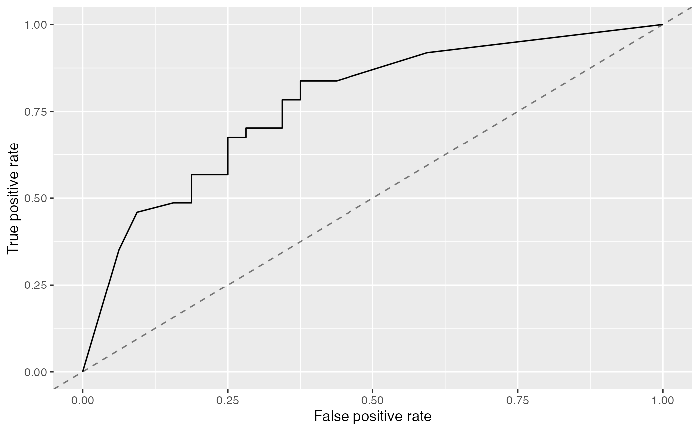
The corresponding area under curve (auc) can be calculated as usual by calling performance().
mlr::performance(pred1, mlr::auc) ## auc ## 0.7871622
plotROCCurves() always requires a pair of performance measures that are plotted against each other. If you want to plot individual measures versus the decision threshold you can use function plotThreshVsPerf().
plotThreshVsPerf(df)
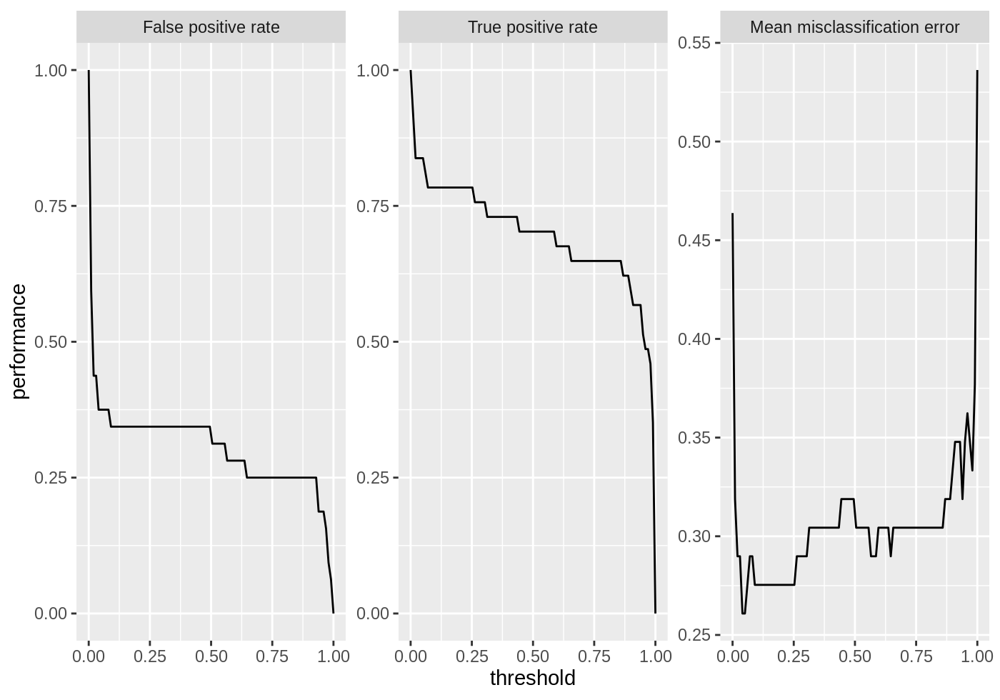
Additional to linear discriminant analysis (MASS::lda()) we try a support vector machine with RBF kernel (kernlab::ksvm()).
lrn2 = makeLearner("classif.ksvm", predict.type = "prob") mod2 = train(lrn2, sonar.task, subset = train.set) pred2 = predict(mod2, task = sonar.task, subset = test.set)
In order to compare the performance of the two learners you might want to display the two corresponding ROC curves in one plot. For this purpose just pass a named list of Prediction()s to generateThreshVsPerfData().
df = generateThreshVsPerfData(list(lda = pred1, ksvm = pred2), measures = list(fpr, tpr)) plotROCCurves(df)
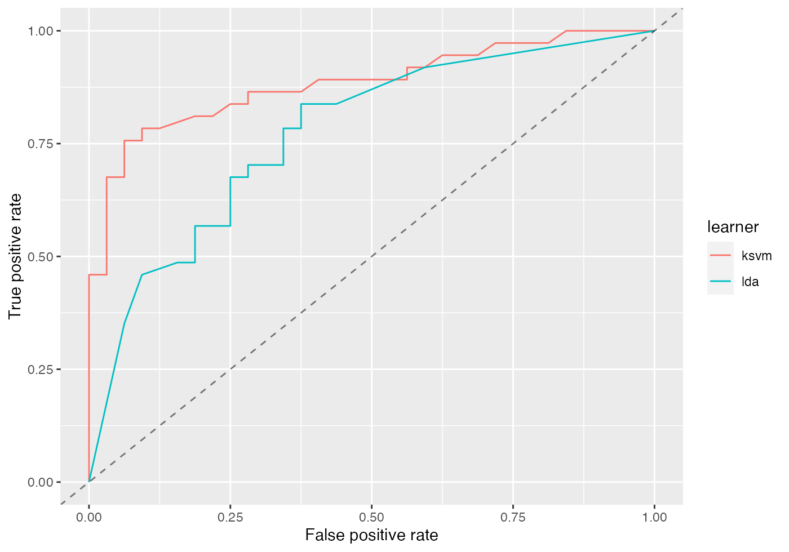
It’s clear from the plot above that kernlab::ksvm() has a slightly higher AUC than lda (MASS::lda()).
mlr::performance(pred2, mlr::auc) ## auc ## 0.8834459
Based on the $data member of df you can easily generate custom plots. Below the curves for the two learners are superposed.
qplot(x = fpr, y = tpr, color = learner, data = df$data, geom = "path")
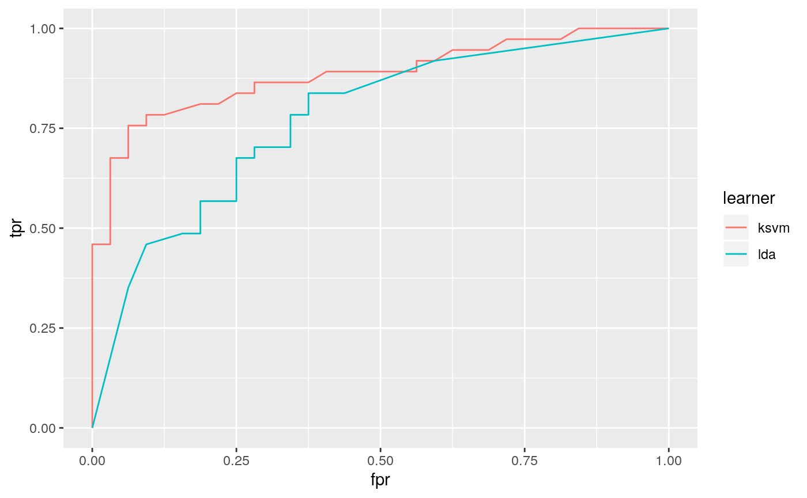
It is easily possible to generate other performance plots by passing the appropriate performance measures to generateThreshVsPerfData() and plotROCCurves(). Below, we generate a precision/recall graph (precision = positive predictive value = ppv, recall = tpr) and a sensitivity/specificity plot (sensitivity = tpr, specificity = tnr).
df = generateThreshVsPerfData(list(lda = pred1, ksvm = pred2), measures = list(ppv, tpr, tnr)) # Precision/recall graph plotROCCurves(df, measures = list(tpr, ppv), diagonal = FALSE) # Sensitivity/specificity plot plotROCCurves(df, measures = list(tnr, tpr), diagonal = FALSE)
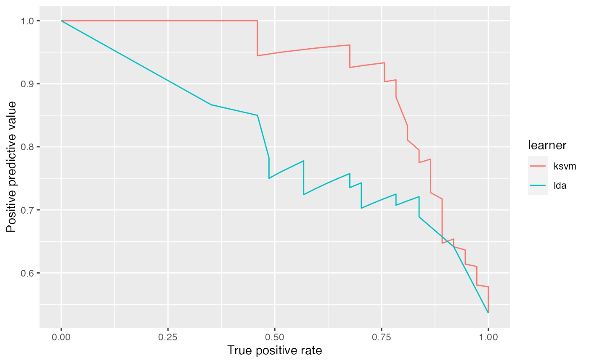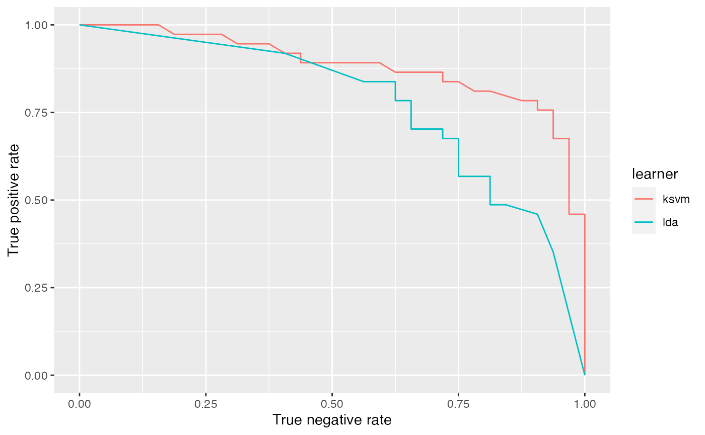
Example 2: Benchmark experiment
The analysis in the example above can be improved a little. Instead of writing individual code for training/prediction of each learner, which can become tedious very quickly, we can use function benchmark() (see also Benchmark Experiments) and, ideally, the support vector machine should have been tuned.
We again consider the Sonar (mlbench::Sonar()) data set and apply MASS::lda() as well as kernlab::ksvm(). We first generate a tuning wrapper (makeTuneWrapper()) for kernlab::ksvm(). The cost parameter is tuned on a (for demonstration purposes small) parameter grid. We assume that we are interested in a good performance over the complete threshold range and therefore tune with regard to the auc. The error rate (mmce) for a threshold value of 0.5 is reported as well.
# Tune wrapper for ksvm rdesc.inner = makeResampleDesc("Holdout") ms = list(mlr::auc, mmce) ps = makeParamSet( makeDiscreteParam("C", 2^(-1:1)) ) ctrl = makeTuneControlGrid() lrn2 = makeTuneWrapper(lrn2, rdesc.inner, ms, ps, ctrl, show.info = FALSE)
Below the actual benchmark experiment is conducted. As resampling strategy we use 5-fold cross-validation and again calculate the auc as well as the error rate (for a threshold/cutoff value of 0.5).
# Benchmark experiment lrns = list(lrn1, lrn2) rdesc.outer = makeResampleDesc("CV", iters = 5) bmr = benchmark(lrns, tasks = sonar.task, resampling = rdesc.outer, measures = ms, show.info = FALSE) bmr ## task.id learner.id auc.test.mean mmce.test.mean ## 1 Sonar-example classif.lda 0.7950028 0.2547038 ## 2 Sonar-example classif.ksvm.tuned 0.9243248 0.1632985
Calling generateThreshVsPerfData() and plotROCCurves() on the benchmark result (BenchmarkResult()) produces a plot with ROC curves for all learners in the experiment.
df = generateThreshVsPerfData(bmr, measures = list(fpr, tpr, mmce)) plotROCCurves(df)
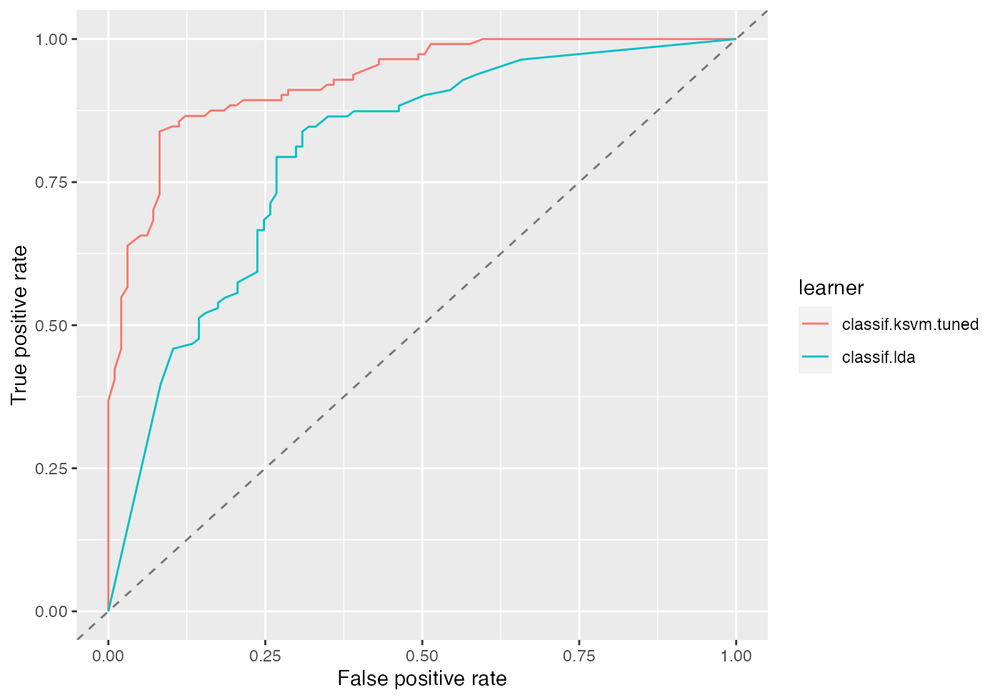
Per default, generateThreshVsPerfData() calculates aggregated performances according to the chosen resampling strategy (5-fold cross-validation) and aggregation scheme (test.mean (aggregations())) for each threshold in the sequence. This way we get threshold-averaged ROC curves.
If you want to plot the individual ROC curves for each resample iteration set aggregate = FALSE.
df = generateThreshVsPerfData(bmr, measures = list(fpr, tpr, mmce), aggregate = FALSE) plotROCCurves(df)
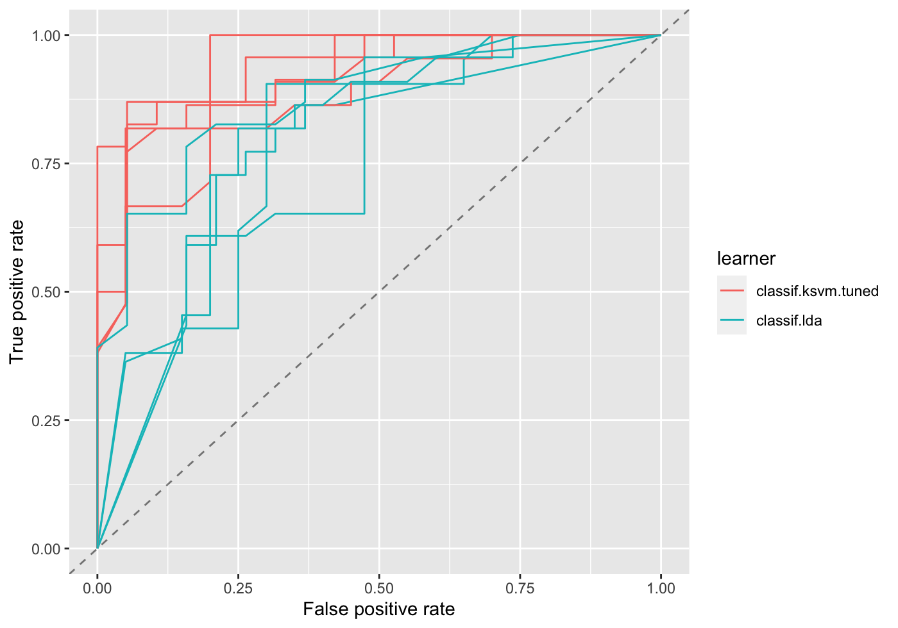
The same applies for plotThreshVsPerf().
plotThreshVsPerf(df) + theme(strip.text.x = element_text(size = 7))
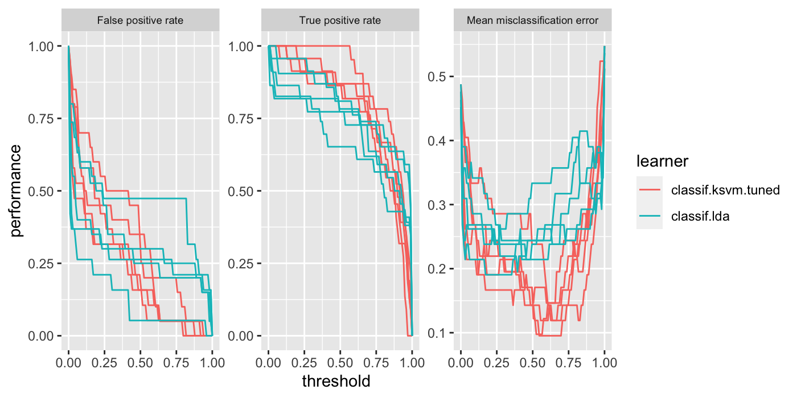
An alternative to averaging is to just merge the 5 test folds and draw a single ROC curve. Merging can be achieved by manually changing the class attribute of the prediction objects from ResamplePrediction() to Prediction().
Below, the predictions are extracted from the BenchmarkResult() via function getBMRPredictions(), the class is changed and the ROC curves are created.
Averaging methods are normally preferred (cp. Fawcett, 2006), as they permit to assess the variability, which is needed to properly compare classifier performance.
# Extract predictions preds = getBMRPredictions(bmr, drop = TRUE) # Change the class attribute preds2 = lapply(preds, function(x) {class(x) = "Prediction"; return(x)}) # Draw ROC curves df = generateThreshVsPerfData(preds2, measures = list(fpr, tpr, mmce)) plotROCCurves(df)
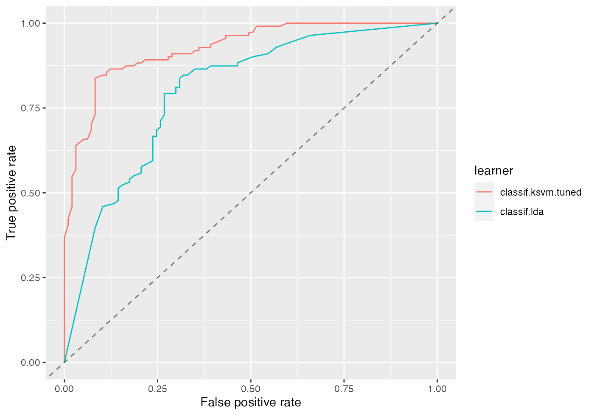
Again, you can easily create other standard evaluation plots by passing the appropriate performance measures to generateThreshVsPerfData() and plotROCCurves().
Performance plots with asROCRPrediction
Drawing performance plots with package ROCR works through three basic commands:
-
ROCR::prediction(): Create aROCRprediction object. -
ROCR::performance(): Calculate one or more performance measures for the given prediction object. -
ROCR::plot(): Generate the performance plot.
mlr’s function asROCRPrediction() converts an mlr Prediction() object to a ROCR prediction (ROCR::prediction-class()) object, so you can easily generate performance plots by doing steps 2. and 3. yourself. ROCR’s plot (ROCR::plot-methods()) method has some nice features which are not (yet) available in plotROCCurves(), for example plotting the convex hull of the ROC curves. Some examples are shown below.
Example 1: Single predictions (continued)
We go back to out first example where we trained and predicted MASS::lda() on the sonar classification task (sonar.task()).
n = getTaskSize(sonar.task) train.set = sample(n, size = round(2/3 * n)) test.set = setdiff(seq_len(n), train.set) # Train and predict linear discriminant analysis lrn1 = makeLearner("classif.lda", predict.type = "prob") mod1 = train(lrn1, sonar.task, subset = train.set) pred1 = predict(mod1, task = sonar.task, subset = test.set)
Below we use asROCRPrediction() to convert the lda prediction, let ROCR calculate the true and false positive rate and plot the ROC curve.
# Convert prediction ROCRpred1 = asROCRPrediction(pred1) # Calculate true and false positive rate ROCRperf1 = ROCR::performance(ROCRpred1, "tpr", "fpr") # Draw ROC curve ROCR::plot(ROCRperf1)
Below is the same ROC curve, but we make use of some more graphical parameters: The ROC curve is color-coded by the threshold and selected threshold values are printed on the curve. Additionally, the convex hull (black broken line) of the ROC curve is drawn.
# Draw ROC curve ROCR::plot(ROCRperf1, colorize = TRUE, print.cutoffs.at = seq(0.1, 0.9, 0.1), lwd = 2) # Draw convex hull of ROC curve ch = ROCR::performance(ROCRpred1, "rch") ROCR::plot(ch, add = TRUE, lty = 2)
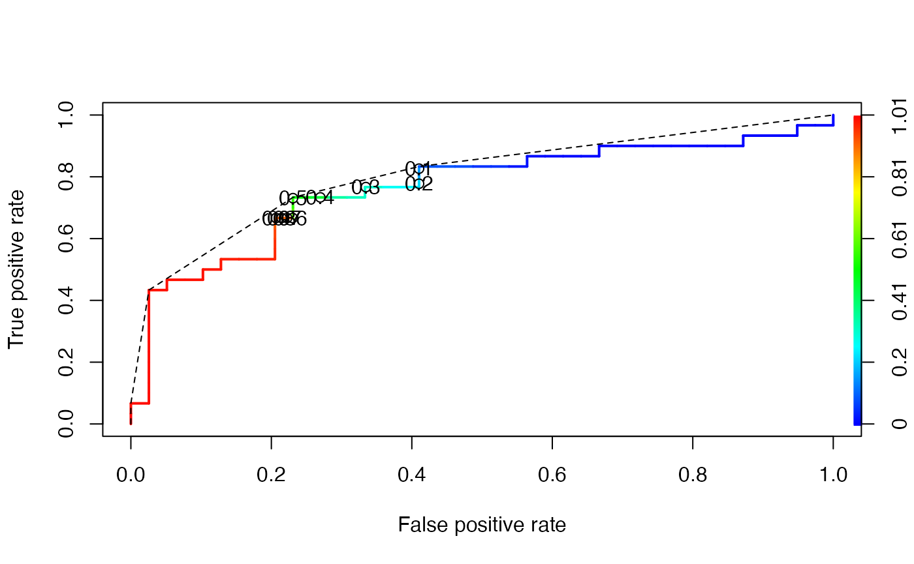
Example 2: Benchmark experiments (continued)
We again consider the benchmark experiment conducted earlier. We first extract the predictions by getBMRPredictions() and then convert them via function asROCRPrediction().
# Extract predictions preds = getBMRPredictions(bmr, drop = TRUE) # Convert predictions ROCRpreds = lapply(preds, asROCRPrediction) # Calculate true and false positive rate ROCRperfs = lapply(ROCRpreds, function(x) ROCR::performance(x, "tpr", "fpr"))
We draw the vertically averaged ROC curves (solid lines) as well as the ROC curves for the individual resampling iterations (broken lines). Moreover, standard error bars are plotted for selected true positive rates (0.1, 0.2, …, 0.9). See ROCR’s plot (ROCR::plot-methods()) function for details.
# lda average ROC curve plot(ROCRperfs[[1]], col = "blue", avg = "vertical", spread.estimate = "stderror", show.spread.at = seq(0.1, 0.8, 0.1), plotCI.col = "blue", plotCI.lwd = 2, lwd = 2) # lda individual ROC curves plot(ROCRperfs[[1]], col = "blue", lty = 2, lwd = 0.25, add = TRUE) # ksvm average ROC curve plot(ROCRperfs[[2]], col = "red", avg = "vertical", spread.estimate = "stderror", show.spread.at = seq(0.1, 0.6, 0.1), plotCI.col = "red", plotCI.lwd = 2, lwd = 2, add = TRUE) # ksvm individual ROC curves plot(ROCRperfs[[2]], col = "red", lty = 2, lwd = 0.25, add = TRUE) legend("bottomright", legend = getBMRLearnerIds(bmr), lty = 1, lwd = 2, col = c("blue", "red"))
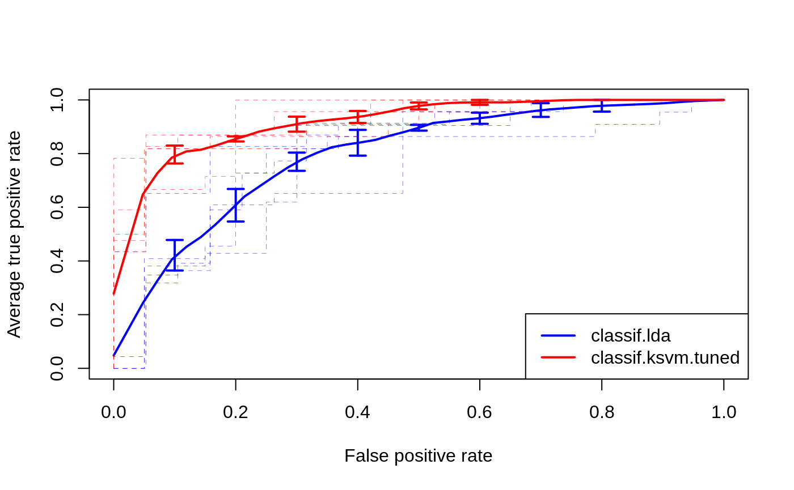
In order to create other evaluation plots like precision/recall graphs you just have to change the performance measures when calling ROCR::performance(). (Note that you have to use the measures provided by ROCR listed in ROCR::performance() and not mlr’s performance measures.)
# Extract and convert predictions preds = getBMRPredictions(bmr, drop = TRUE) ROCRpreds = lapply(preds, asROCRPrediction) # Calculate precision and recall ROCRperfs = lapply(ROCRpreds, function(x) ROCR::performance(x, "prec", "rec")) # Draw performance plot plot(ROCRperfs[[1]], col = "blue", avg = "threshold") plot(ROCRperfs[[2]], col = "red", avg = "threshold", add = TRUE) legend("bottomleft", legend = getBMRLearnerIds(bmr), lty = 1, col = c("blue", "red"))
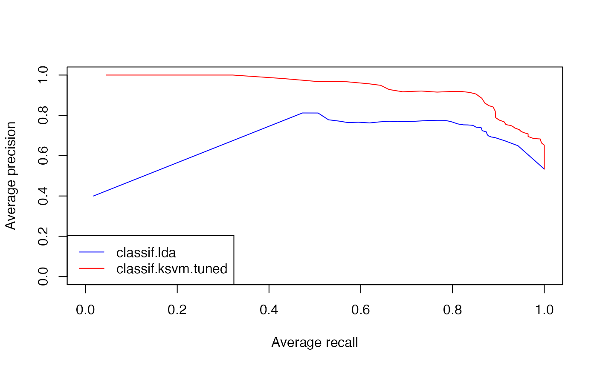
If you want to plot a performance measure versus the threshold, specify only one measure when calling ROCR::performance(). Below the average accuracy over the 5 cross-validation iterations is plotted against the threshold. Moreover, boxplots for certain threshold values (0.1, 0.2, …, 0.9) are drawn.
# Extract and convert predictions preds = getBMRPredictions(bmr, drop = TRUE) ROCRpreds = lapply(preds, asROCRPrediction) # Calculate accuracy ROCRperfs = lapply(ROCRpreds, function(x) ROCR::performance(x, "acc")) # Plot accuracy versus threshold plot(ROCRperfs[[1]], avg = "vertical", spread.estimate = "boxplot", lwd = 2, col = "blue", show.spread.at = seq(0.1, 0.9, 0.1), ylim = c(0,1), xlab = "Threshold")
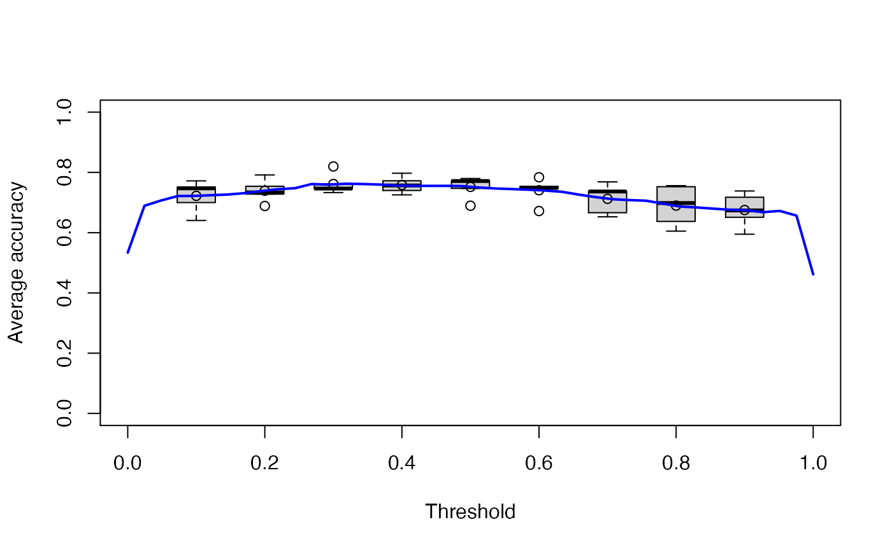
Viper charts
mlr also supports ViperCharts for plotting ROC and other performance curves. Like generateThreshVsPerfData() it has S3 methods for objects of class Prediction(), ResampleResult() and BenchmarkResult(). Below plots for the benchmark experiment (Example 2) are generated.
z = plotViperCharts(bmr, chart = "rocc", browse = FALSE) ## Error in plotViperCharts(bmr, chart = "rocc", browse = FALSE): could not find function "plotViperCharts"
Note that besides ROC curves you get several other plots like lift charts or cost curves. For details, see plotViperCharts().